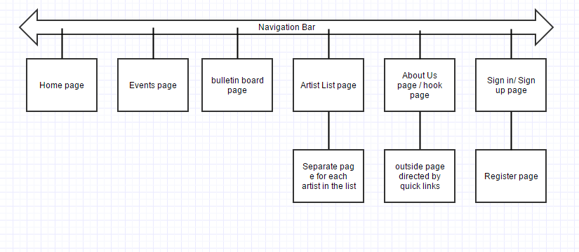

Members: Adrian zahra, James Mogg, Tyler Dean Harris, Danny Tomasic
To further get word out about the new refurbished music center thus increasing ticket sales and improving the quality of all functions held at the center.
The webpages success will be evaluated by the number of new member signups that the webpage receives during all music center events along with the amounts of ticket sales.
The target audience for the website will be music enthusiasts or people who enjoy the art of music all together.These people will be in a range of manny age groups.
• Homepage • Bulletin board • news/events calender page • Artist page o Separate pages for each individual music artist (give more info on the artist) • Login / register page • About us Page to provide information and to make people interested about the music centre and its program.
